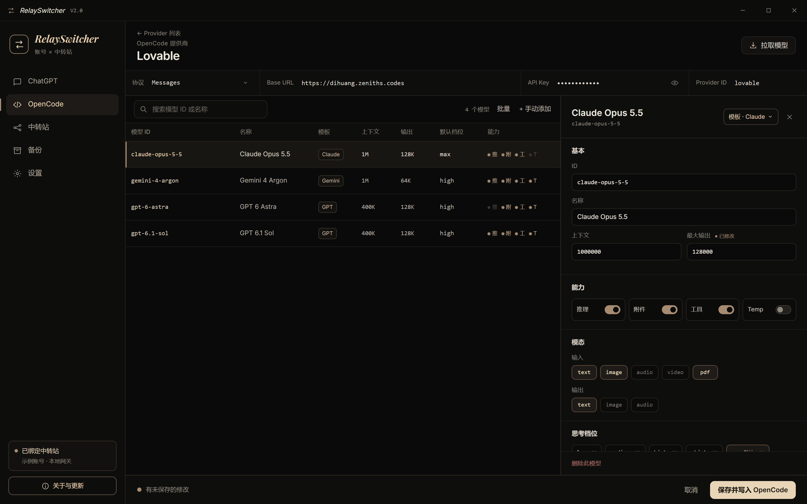
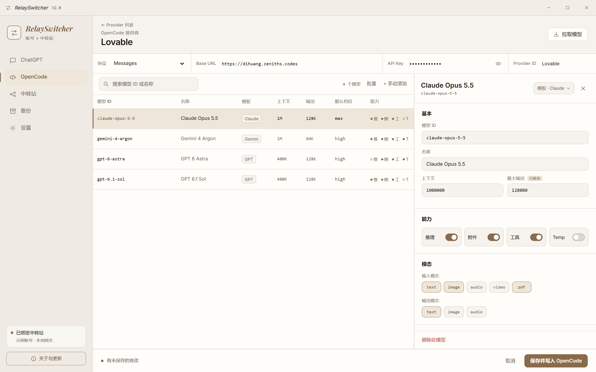
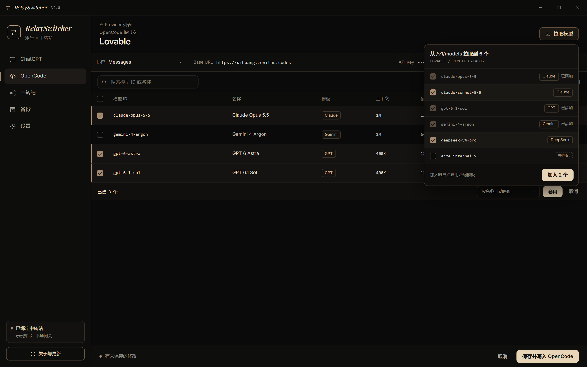

① 深色 · 主界面
- 整页不滚动，保存栏贴底；只有表格和右侧抽屉内部滚动
- 连接一行，四格点击即可改；API Key 带小眼睛
- 表格「能力」列：推 / 附 / 工 / T 四个小点，亮 = 开
- 右侧抽屉：模板 · Claude ▾ 菜单、基本、能力、模态、思考档位（往下滚），最底下「删除此模型」

② 浅色皮肤 · 同一界面
- 暖白纸色底 + 深铜色强调，侧栏和标题栏一起变浅
- 布局、控件完全一样，只换颜色；设置里加「深色 / 浅色」切换

③ 交互状态：批量模式 + 拉取模型
- 点「批量」后每行出现深色复选框，底部一条：已选 3 个 · 模板 ▾ · 套用 · 取消（此时抽屉收起）
- 点「拉取模型」弹出小面板：已添加的灰掉，勾选新的点「加入 2 个」，自动套用模板
- 图里为了演示把两个状态画在一起，实际不会同时出现
